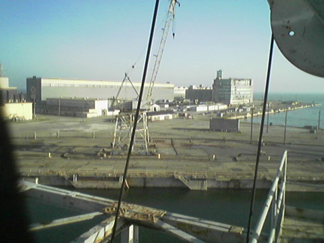
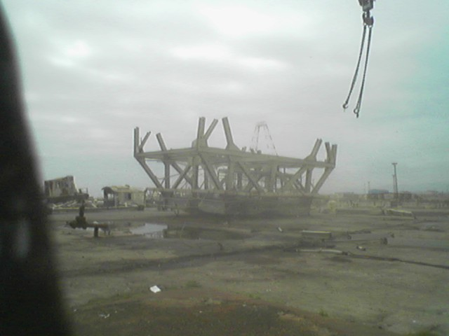
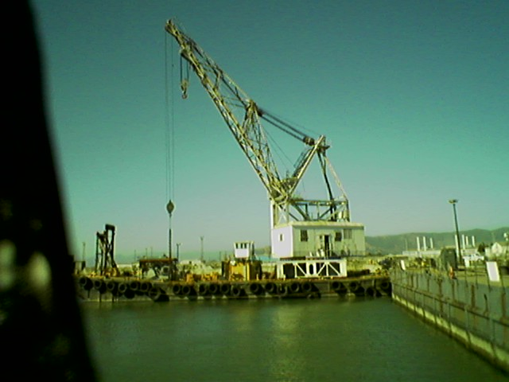

Hunters Point Naval Shipyard: Crane Removal Project

| Project : Dissassemble five
nuclear shipyard rail cranes
Conditions: Winter 2005, San Francisco
Brief:
Mr. James Davies, owner of “Davies Machine and Rail” taught Victor to break each crane into its three components – boom, car and body - and safely lower them for scrap sizing. Unique saftey and environmental concerns led Davies Machine and Rail to use a ultra small three person crew for the dismantling work. These cranes were the remaining heavy infrastructure of the Hunters Point Naval Shipyard. Many on lookers lamented the dismantling of the heart of the shipyard - her mammoth drydock and portal cranes. |
... | 
Looking East over dry dock #4 (DD#4) from the DRAVO. View shows machine shop, warehouse, periscope fabrication and testing facility (note glass tower on roof to test periscopes). |
|
(2) Looking North. View shows flooded dry dock #4 and two of the five cranes awaiting deconstruction. |
(3) Looking South from the DRAVO. View shows long boom crane F5 and the now removed caisson (the “plug” for the dry dock). |
|
|
(4) Cannibalized Torpedo Tube pressure gage reassigned to the DRAVO’s start up pressure tank. |
(5) Looking North at the 350 Ton lift capacity DRAVO. |
|
|
(6) Preparing to tension the “A” frame and lower the boom for removal. |
(7) Three portal cranes at the waters edge. During storm and high sea conditions waves wash over the caisson onto the work area. Note the rigging cables attached and awaiting tension |
|
|
(9) DRAVO removing body in foggy conditions |
(10) Picking body of portal crane at NE corner of DD#4. Note the “A” frame on the right side of the battle ship crane in background. Left-hand side of crane was used to remove battleship main gun turrets for maintenance. The “A” frame was added to catch “Polaris” missiles in a net during steam launch testing. |
|
| 
(11) Victor’s first 70,000lb “rig and pick” being laid down for scrap sizing |

DRAVO on barge going to the US Northwest |
For more of the history of Hunters Point, click here